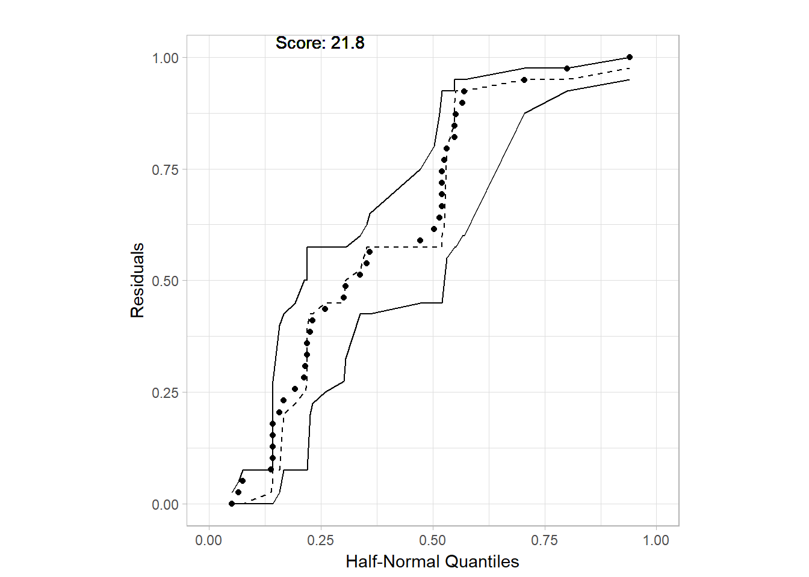
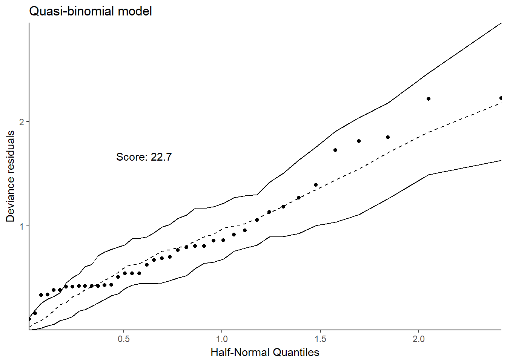
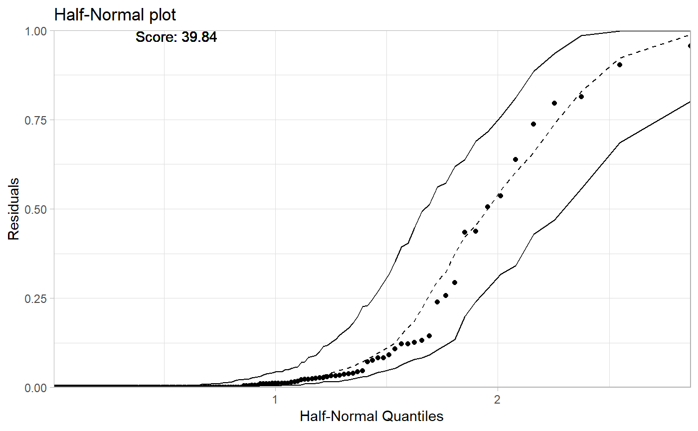
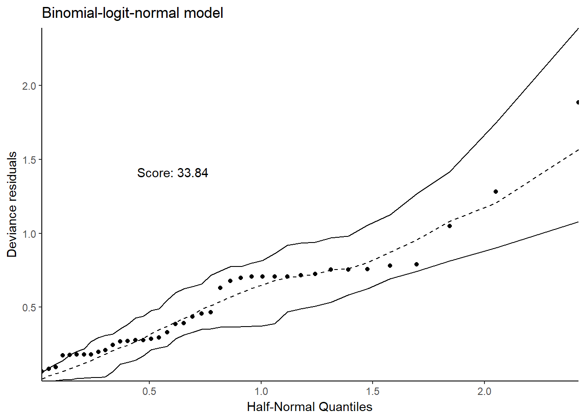
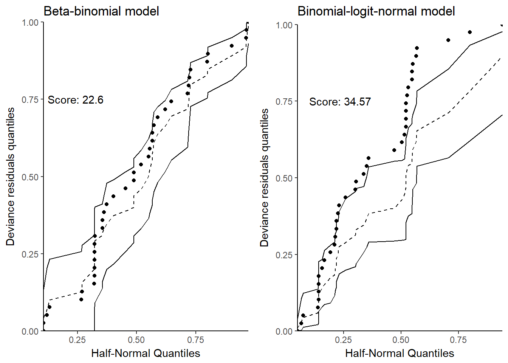

Half-normal plots
Alicja Gosiewska
2 stycznia 2018
library(auditor)Half-normal plot
data("corn", package = "hnp")
head(corn)## extract m y
## 1 leaf 35 26
## 2 leaf 36 25
## 3 leaf 38 21
## 4 leaf 38 18
## 5 leaf 39 30
## 6 leaf 38 8model <- glm(cbind(y, m - y) ~ extract, family = binomial, data = corn)
set.seed(1234)
plotHalfNormal(model, score = TRUE)## Binomial model
fit2_b <- glm(cbind(y, m - y) ~ extract, family = quasibinomial, data = corn)
plotHalfNormal(fit2_b, main = "Quasi-binomial model", ylab = "Deviance residuals")## Quasi-binomial model
library("aods3")
fit3_b <- aodml(cbind(y, m - y) ~ extract, family = "bb", data = corn)
plotHalfNormal(fit3_b, ylab = "Deviance residuals", main = "Beta-binomial model")## Beta-binomial model (using aods3 package)
library("lme4")
x <- factor(seq_len(nrow(corn)))
fit4_b <- glmer(cbind(y, m - y) ~ extract + (1 | x), family = binomial, data = corn)
plotHalfNormal(fit4_b, ylab = "Deviance residuals", main = "Binomial-logit-normal model")## Binomial-normal model
On quantile scale
library(ggpubr)
p1 <- plotHalfNormal(model, main = "Binomial model", ylab = "Deviance residuals quantiles", quant.scale = TRUE)## Binomial modelp2 <- plotHalfNormal(fit2_b, main = "Quasi-binomial model", ylab = "Deviance residuals quantiles", quant.scale = TRUE)## Quasi-binomial modelp3 <- plotHalfNormal(fit3_b, ylab = "Deviance residuals quantiles", main = "Beta-binomial model", quant.scale = TRUE)## Beta-binomial model (using aods3 package)p4 <- plotHalfNormal(fit4_b, ylab = "Deviance residuals quantiles", main = "Binomial-logit-normal model", quant.scale = TRUE)## Binomial-normal modelggarrange(p1,p2,p3,p4, ncol=2)## $`1`
##
## $`2`
##
## attr(,"class")
## [1] "list" "ggarrange"